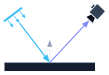
Motores de Renderizado
La física de la luz desde cero: rayos, materiales y cámaras.
Ray Tracing Path Tracing BRDF
Semillero Hands-on Computer Vision · HoCV
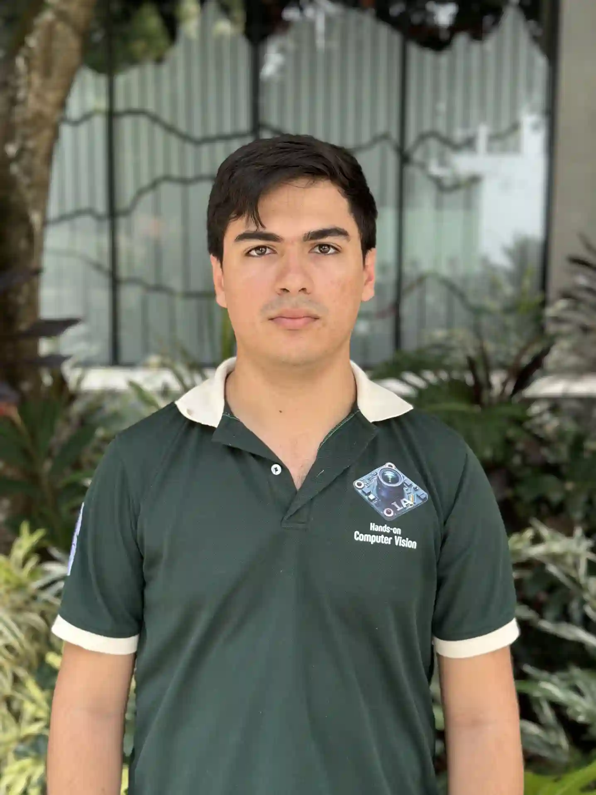
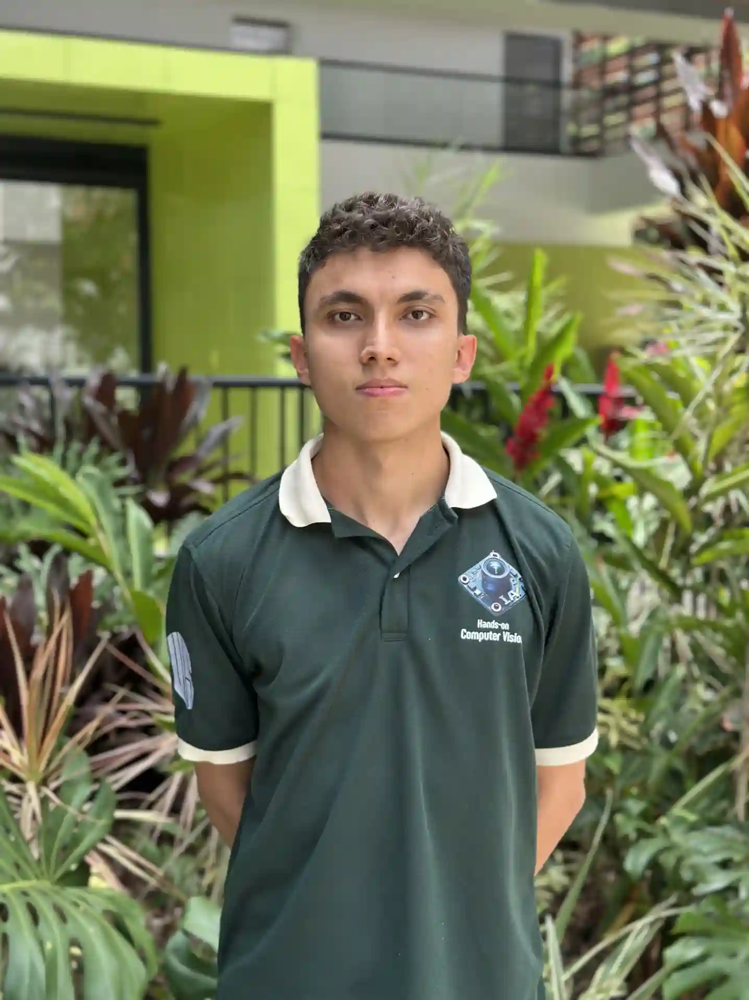
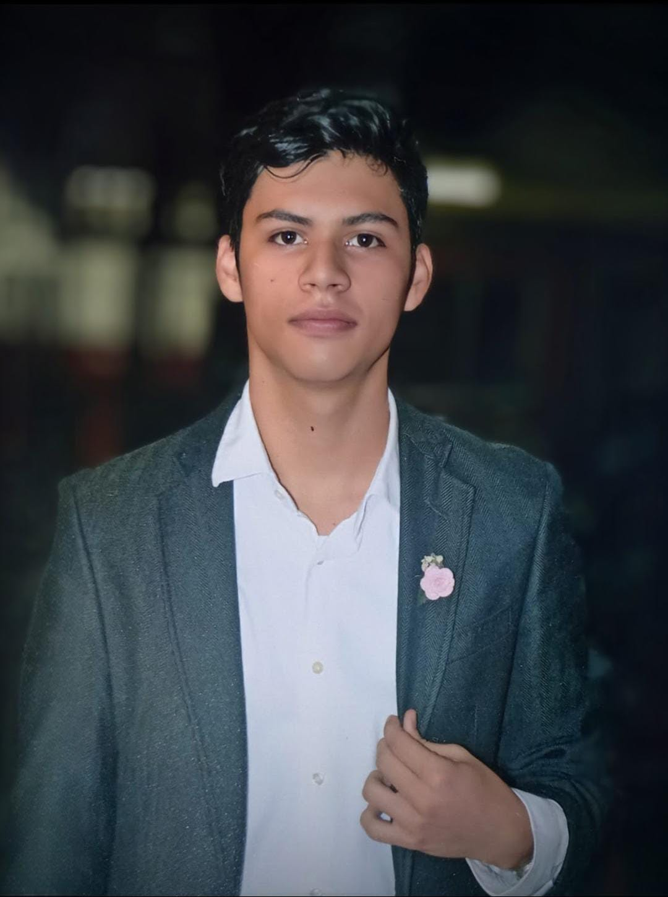
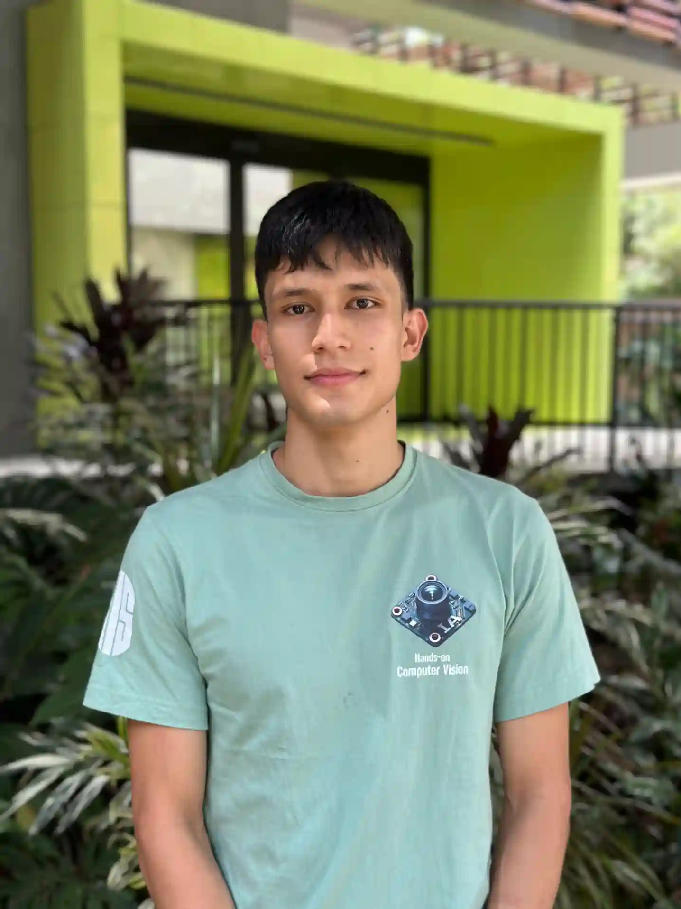
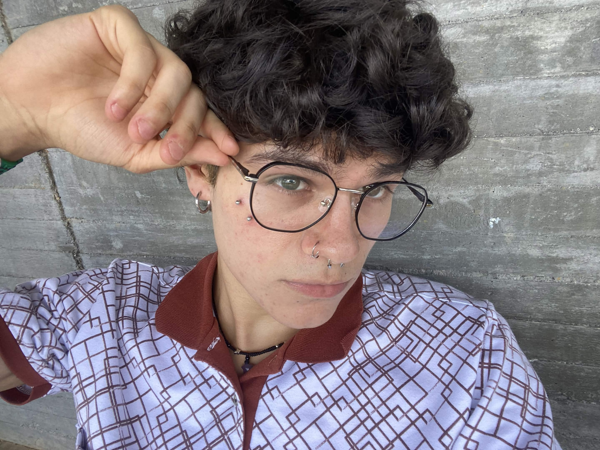
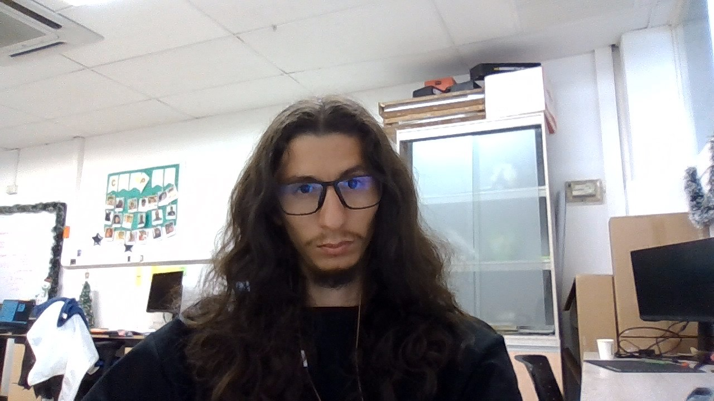
Simulamos cómo viaja la luz para fabricar imágenes. Y entrenamos redes neuronales para que aprendan a hacerlo desde fotos.
Semillero Hands-on Computer Vision · Línea de Renderizado
Render propio en Mitsuba 3: vidrio, oro y niebla con volpath
Cada vez que una máquina necesita ver un mundo que no existe, alguien tiene que renderizarlo.
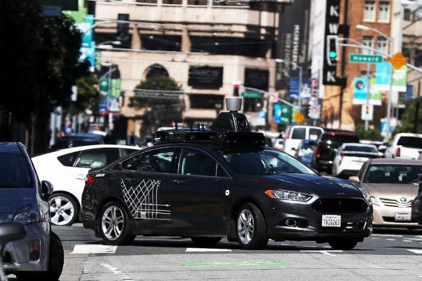
Datos sintéticos para entrenar autos autónomos sin salir a la calle.
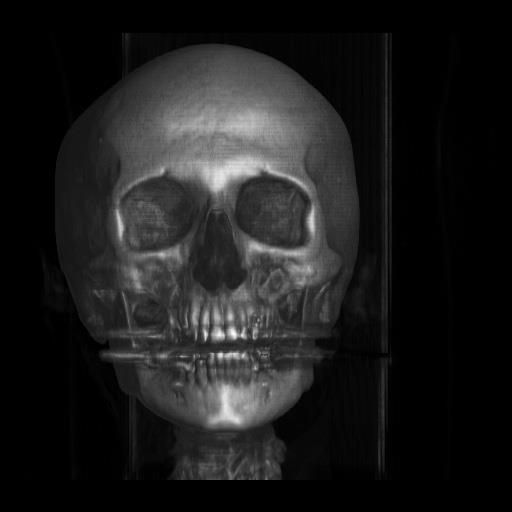
Volumetric Rendering de tomografías: ver dentro del cuerpo sin abrirlo.
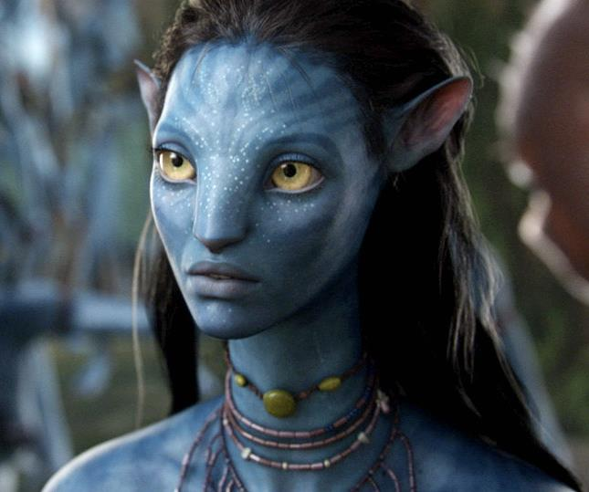
Personajes y mundos fotorrealistas que nunca estuvieron frente a una cámara.
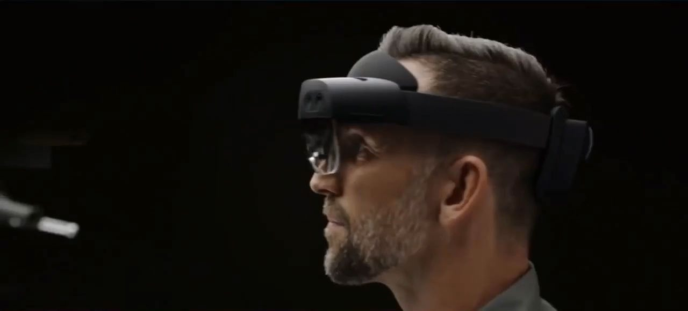
Objetos virtuales iluminados como el cuarto en el que estás.
Las tres líneas que trabajamos hoy en el semillero.

La física de la luz desde cero: rayos, materiales y cámaras.
Ray Tracing Path Tracing BRDF
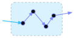
Nubes, humo y medios participativos: la luz se dispersa en cada punto del volumen.
Ray Marching ETR
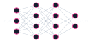
Deep Learning que aprende una escena 3D a partir de fotos.
NeRF 3D Gaussian Splatting
Dos estrategias para decidir qué color lleva cada píxel.
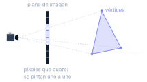
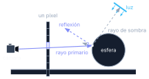
La ecuación de renderizado no tiene forma cerrada: la resolvemos con integración Monte Carlo. Aquí se cruzan cálculo, álgebra lineal y probabilidad.
La misma integral que renderiza una nube sirve para entrenar una NeRF.
3D Gaussian Splatting cambia la red por una nube de gaussianas 3D que se rasterizan en tiempo real.
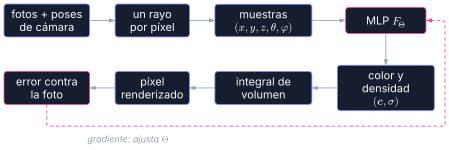
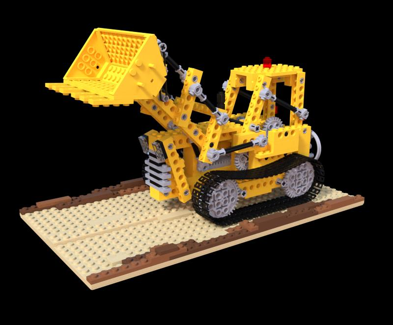
Proyectos de grado, todos en desarrollo: luz más allá de lo visible.
Jorge en curso
Imágenes LWIR sintéticas resolviendo la ecuación de transferencia radiativa con Volumetric Rendering.
Mitsuba 3 ETR [stack completo]
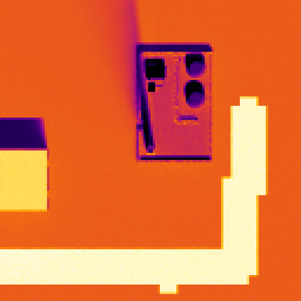
Chris Orduz en curso
Síntesis de vistas en infrarrojo de onda larga con 3D Gaussian Splatting guiado por la física.
3D Gaussian Splatting [stack]
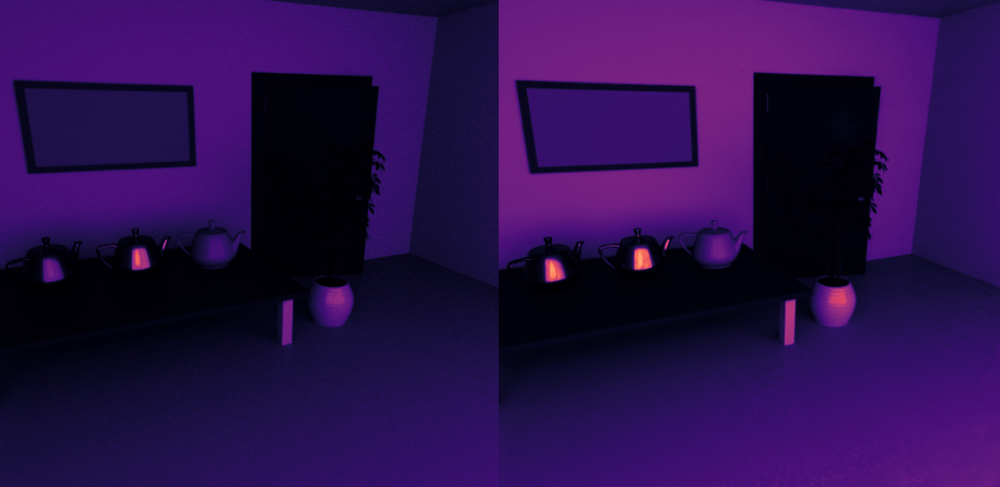
Juanda en curso
Nuevas vistas de imágenes hiperespectrales usando desmezclado espectral.
3D Gaussian Splatting spectral unmixing [stack]
Juan Toloza
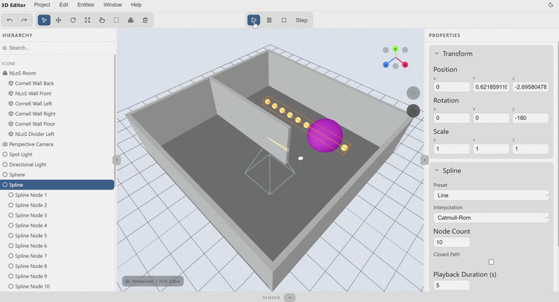
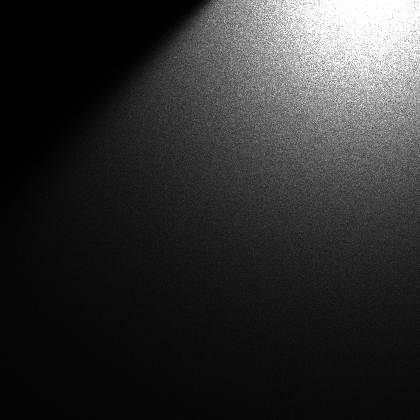
Juntar el control de un motor físico con lo que una red aprende de las fotos.
Simuladores físicos (Mitsuba 3, ETR) y 3D Gaussian Splatting espectral, cada uno por su lado.
Escenas neuronales dentro de un motor físico: la red aprende, el motor garantiza la física.
Motores neuronales en tiempo real, con control explícito sobre luz y materiales.
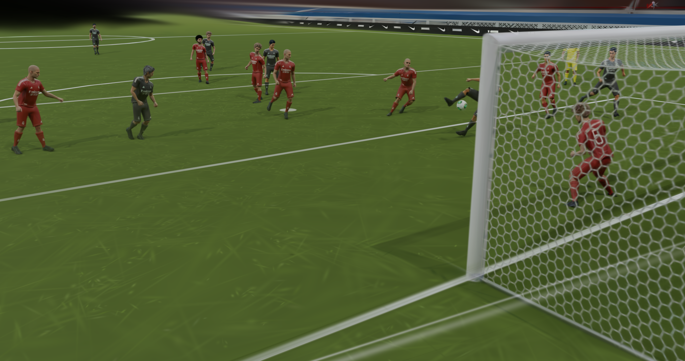
Cálculo, álgebra lineal y probabilidad con resultado en pantalla: si la integral está mal, el píxel también.
C++, CUDA, PyTorch y renderizado físico: lo que buscan equipos de gráficos como los de NVIDIA, Epic Games o Apple.
Trabajas con métodos publicados el último año y compites en retos de CVPR.
Si te gustó, escanea el código y ven a la próxima reunión.